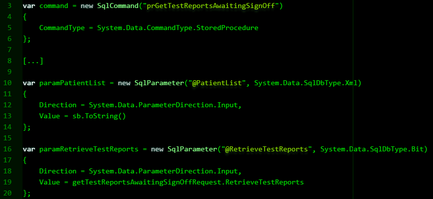
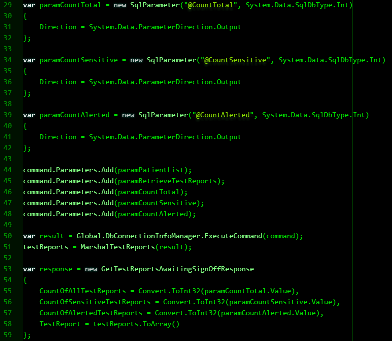

Web Service Entry Point
Near the start of the .asmx file we have code that defines the application as conforming to Web Services Interoperability, anda reference to a general class called 'WebService':
[WebServiceBinding(ConformsTo = WsiProfiles.BasicProfile1_1)]
public class NotificationServices : WebService
There follows the interfaces for the Web Services in the application, e.g.
public class NotificationServices : WebService,
IGetTestReportsAwaitingSignOff,
ISignOffTestReport,
IGetPersonalNotifications,
IGetTestReport,
IGetSignedOffTestReports,
IGetCountTestsPlacedByMe,
IGetListTestsPlacedByMe
If we use 'Peek Definition' on an interface, we find it refers to a public interface [interface] class with a WebServiceBinding attribute. This contains a call to the Web Service method described below.
A Description of the Web Service Method
The Web Service method here is called:
public GetTestReportsAwaitingSignOffResponse GetTestReportsAwaitingSignOff(GetTestReportsAwaitingSignOffRequest getTestReportsAwaitingSignOffRequest)
GetTestReportsAwaitingSignOffResponse is a base class or 'singleton' being extended by GetTestReportsAwaitingSignOff().
Using 'Peek Definition on the above, Visual Studio presents us with the properties for the data we expect to be returned by the Web Service. The main function of the implementing class, GetTestReportsAwaitingSignOff, calls a stored procedure named 'prGetTestReportsAwaitingSignOff', passing values for parameters @PatientList and @RetrieveTestReports.

The next three parameters are values returned by the stored procedure, after the DbConnectionManager is used to make the request as a SQL command.

What we get back from the Web Service are counts of total reports, sensitive reports and alerts. These are declared as CountOfAllTestReports, CountOfSensitiveReports and CountOfAlertedTestReports, then all three are collectively declared as 'response'. This is what's returned by the Web Service method.
Two more things need mentioning. Firstly, one of the input parameters, @PatientList, an XML string that's constructed by an instance of StringBuilder and declared as 'sb'.
And one of the variables in the response, which I haven't mentioned yet, is 'testReports'. This isn't returned by the stored procedure, but instead comes from another method called 'TestReportStructure()'.
Web.config
As the name indicates, the
connectionStrings element contains the connection strings for the data sources, in my case the database the Web Services are communicating with.
An example of this element and its attributes:
add name="myDatabaseConnection" connectionString="Data Source=mydatabaseserver,3023; Initial Catalog=myDatabase;integrated security=true; " providerName="System.Data.SqlClient"
- name: The connection string name.
- Data Source: The server host name and port number.
- Initial Catalog: The database hosted on the server.
- Integrated Security: Set to 'True', if we're using the local system account to authenticate with the database server.
providerName: The assembly reference for the database driver.
Each component has a root element. Here I have '
MyDatabase', storing the config for the system my Web Services are working with.
Global.asax
Controls access to the application. This class extends System.Web.HttpApplication. At the beginning on the class, we declare the following internal static variables:
internal static DbConnectionManager DbConnectionInfoManager;
internal static ObjectCache Cache = MemoryCache.Default;
protected void Application_Start(object sender, EventArgs e)
{
DbConnectionInfoManager = new DbConnectionManager();
}
protected void Session_Start(object sender, EventArgs e) {}
protected void Application_BeginRequest(object sender, EventArgs e) {}
protected void Application_AuthenticateRequest(object sender, EventArgs e) {}
protected void Application_Error(object sender, EventArgs e) {}
protected void Session_End(object sender, EventArgs e) {}
protected void Application_End(object sender, EventArgs e) {}
References
CHUMBLEY, R. DURAND, J. PILZ, G. 2010. Basic Profile Version 2.0: Final Material.
The Web Services-Interoperability Organization. [WWW].
http://ws-i.org/profiles/BasicProfile-2.0-2010-11-09.html. (3rd July 2017).